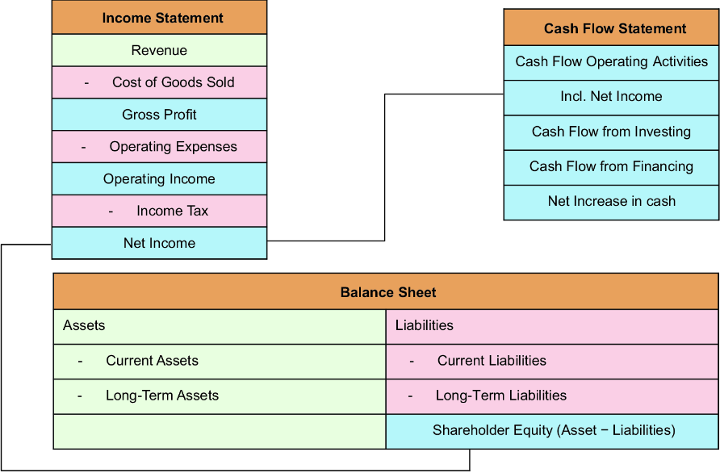
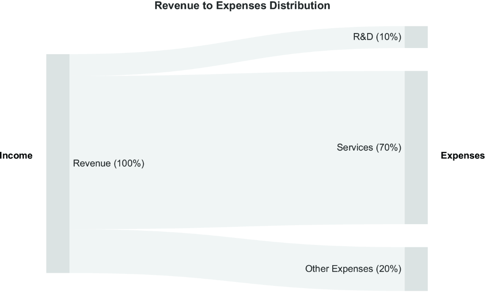
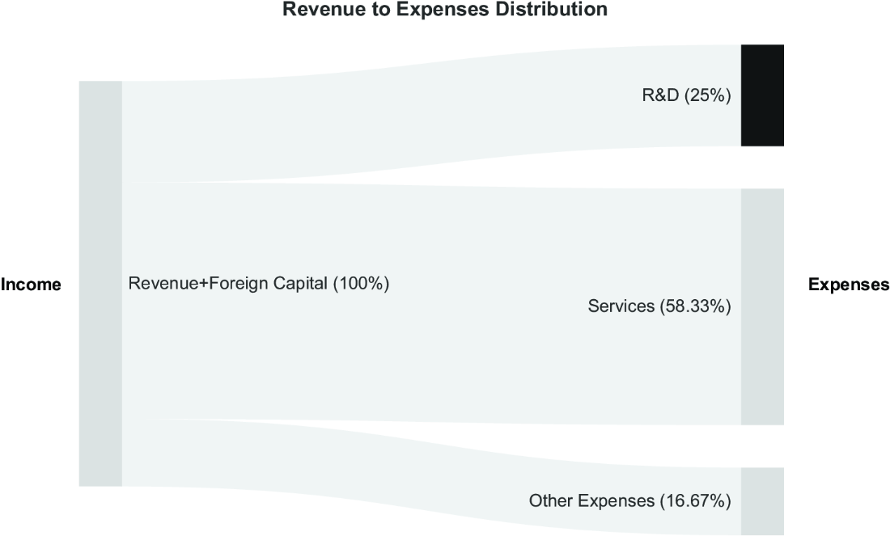
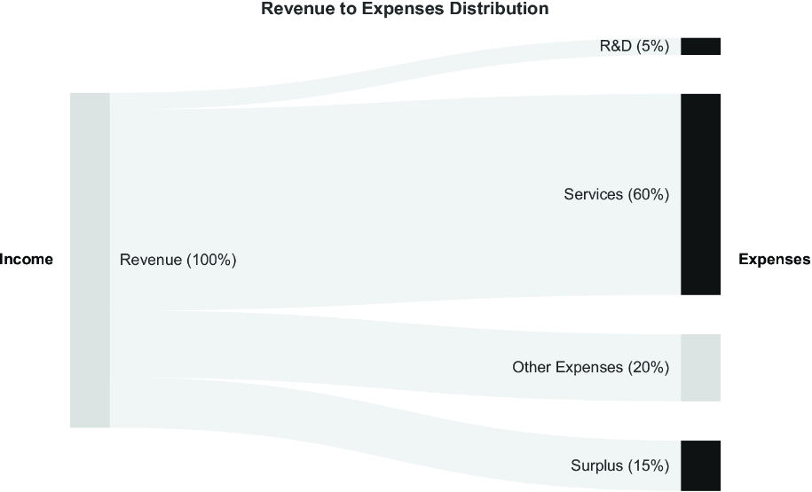
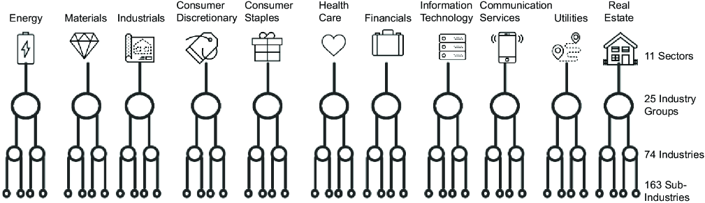
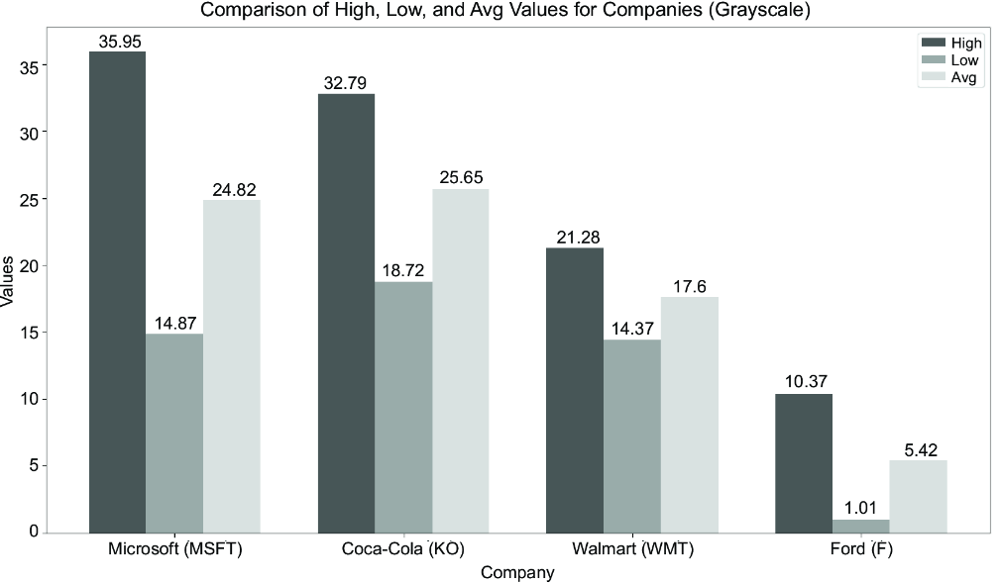
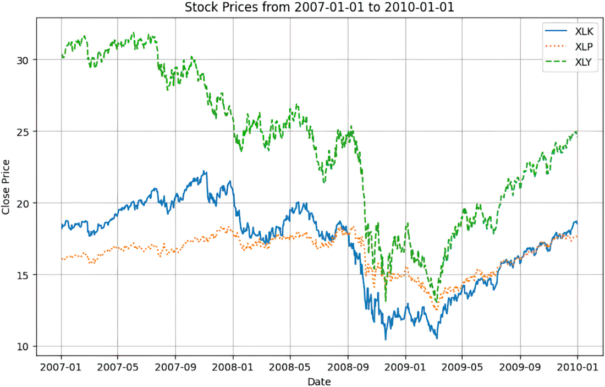

In chapter 1, we claimed that programmers’ traits can often make these wizards of bits and bytes into outstanding investors. But traits (and brains) alone won’t do. Take the following statement that you might find in any financial analysis of a share price: “With a P/E ratio of over 25, this stock seems overvalued.” For someone new to investing, sentences like that or dialogs between investors in movies such as Wall Street or The Big Short might sound like a foreign language. In 2003, Eric Evans published his book, Domain-Driven Design, which contains principles for creating software in unfamiliar domains for software engineers. One cornerstone of these principles is the use of ubiquitous language. This principle asserts that each domain has developed its specialized language using terminology exclusive to domain experts. An essential part of software engineering is learning to understand and communicate effectively in this language. So, let’s start the next part of our journey by getting deeper into the domain language of investment.
Once we understand the domain language, we can easily interpret the previous P/E ratio statement. A share is a share of ownership in a company. As a tradable asset, a share may trade at a price below or above its intrinsic value. To assess a stock’s valuation, we may investigate multiple metrics or ratios related to a company’s performance. The price-to-earnings (P/E) ratio is a key financial metric related to a company’s earnings.
Finance is a complex domain; if one universal strategy led to guaranteed incredible riches in a short time, hedge funds wouldn’t compete for the best performance. However, intelligent value investors have demonstrated that finding undervalued stocks, when studying fundamentals, is possible. If you’re solely interested in the code, feel free to proceed to the next chapter, where we demonstrate how to collect the ratios and metrics introduced in this chapter using Python.
Think of financial statements as a company’s source code. While they may seem cryptic at first, once you learn to read them, they reveal precisely how a business is performing. In this section, we explore the basics of reading the financial code because investing without understanding at least the basics of accounting is like trying to create a software application with zero programming skills.
Companies follow global accounting standards. If one company reports numbers in one way and another company in a different way, we would end up in chaos. One powerful entity can compel companies to report data in a standardized manner: the government, which requires these reports as a basis for taxation.
Note Just as programmers can misjudge a colleague’s source code at a glance, investors can misinterpret financial statements. In both cases, context is crucial, and a seemingly simple number may be misleading without it. Admitting you were wrong is difficult, but making the initial mistake of judging code or numbers too quickly is a costly one.
Accounting standards haven’t existed since the beginning of stock exchanges. The prevailing economic philosophy of laissez-faire capitalism in the roaring twenties extended to corporate reporting. There were no federal laws compelling companies to disclose financial information to the public. While the New York Stock Exchange had some listing requirements, they weren’t rigorously enforced, and there was no uniform standard for the information that needed to be provided. The stock market crash of 1929, which led to the Great Depression and caused widespread pain, had multiple root causes. Missing accounting standards exacerbated the problem, and, not surprisingly, the Generally Accepted Accounting Principles (GAAP) were established in response to the crash.
These accounting standards establish a stable baseline by mandating a consistent method for companies to report their financial information. Violating them can be costly, sometimes even threatening a company’s existence. In addition to GAAP, there’s a second standard, the International Financial Reporting Standards (IFRS), which is used in the international market. These standards differ in detail, but these differences are irrelevant to a programmer’s book on investments. What counts is that all companies are required to report their findings in three documents that are the basis for all key financial metrics that investors discuss:
We can safely assume that every public company provides these three documents. Whether it’s Apple, Walmart, Coca-Cola, or a non-US company such as Rolls-Royce or Deutsche Bank, they similarly calculate revenue and expenses, although the numbers in the sheets might differ according to the business model. Every company reports all three statements quarterly.
Note As this is a book for programmers, we keep the description of accounting statements to a minimum; however, some basic knowledge is necessary to perform a financial analysis. Sites such as Investopedia (www.investopedia.com/) can provide you with more detailed information on monetary terms.
An income statement shows the company’s performance over a year or a quarter. Figure 2.1 also shows the relationship of the income statement to other statements. Investors typically compare a given quarter with the same quarter from previous years, as many business conditions fluctuate on an annual cycle. Consider how much retail companies are affected by Christmas sales or the holiday season. Therefore, for some companies, Q4—the quarter of the Christmas season—might be decisive for their overall success.

The main components of an income statement are as follows:
If I receive $1 today, it’s worth more than $1 I receive in a year. This concept is called the time value of money. I can invest this dollar today and earn interest on it. At a 5% annual interest rate, $1 becomes $1.05 in one year. Inflation also affects the time value of money, meaning I can buy less with one uninvested dollar in a year than I can today, as consumer prices tend to rise on average.
Imagine a company that consistently generates the same net income over 10 years. Over this period, the real value generated decreases each year. Investors typically expect a successful company to increase both revenue and net income over time.
Analyzing a company’s accounting statements over time helps in formulating hypotheses about its performance and operations. Let’s explore this using a simplified financial model of a fictional consulting firm, which is based on aggregated accounting data. This model has the following characteristics, as shown in figure 2.2:

We continue to monitor the company’s financial statements over time and are interested in seeing if these numbers change significantly. Let’s imagine after studying their latest income statement, we discover that R&D expenses increased enormously. The company finances this increase in research with foreign capital, as shown in figure 2.3.

Just by looking at the increased R&D expenses without any further details, we can take a guess at what’s going on here to come up with theories and create a bullish (optimistic) and a bearish (pessimistic) hypothesis:
Consider an alternative scenario in which the company reduces its spending on services and R&D, while the revenue is unaffected. Figure 2.4 outlines this scenario.

This scenario suggests that the company may see little room for growth. Instead of trying to increase profits by selling more, they monetize existing revenues. Financial experts may examine the interest rate set by the Federal Reserve or the central bank to determine whether that company’s strategy is tied to an economic cycle. Many companies prefer to invest less when interest rates are high and the economy is in a recession. But still, all we can do is create hypotheses about what’s happening:
This was a simplified model, used for demonstration purposes, for a type of company that is relatively easy to model. Consulting companies can be relatively straightforward, as expenses are often linked to income. Consultants work on client projects. The company makes a profit by selling consultancy services at a higher price than their salary expenses. Other companies are far more challenging to model. For example, think of a conglomerate such as Alphabet, for which you need to consider subsidiaries (e.g., Waymo) that operate in multiple domains from advertising to cloud computing.
Another challenge is that we reduced our model to a minimum of parameters for demonstration purposes. The reality is more complex. At the same time, if you analyze concrete companies, you have more resources, such as media reports on the company and interviews with analysts who know the company well. Data-driven investors can build models of companies and create their own priorities regarding what they consider to be essential for a company’s value. The essentials might vary from business to business as well.
Note Companies in different industries operate on vastly different business models. A tech firm such as Apple spends enormous sums on R&D to create a few high-revenue products. In contrast, supermarket chain Walmart focuses on selling a high volume of products from many suppliers. For Walmart, innovation isn’t about creating new products, but about optimizing storage and supply chains while maintaining quality service. Therefore, comparing metrics such as R&D spending between Apple and Walmart would be misleading—it’s like comparing apples and oranges. An investor can achieve a far more insightful analysis by comparing companies within the same industry, such as evaluating Walmart against direct competitor Costco.
The income statement reveals how much a company earns and how it allocates its expenses, which helps us evaluate a company’s strategy. To complete our tour of financial statements and gain a comprehensive picture, we must now determine what the company already owns. We get this information from the balance sheet.
The income sheet tells us what a company made in a period by listing the revenue generated and the expenses. The information that a company already owns or owes still needs to be added. The essence of a balance sheet can be reduced to this simple formula:
Assets = Liabilities + Shareholders’ equity
Assets are what a company owns, liabilities are what it owes, and shareholder equity is the amount shareholders would get paid if all assets were liquidated and the debts were paid. A company may be in serious trouble when its liabilities exceed its assets.
Liquidity is a metric that tells how easily an asset can be converted to cash. Imagine a manufacturing company that puts one of its factories, along with all of its machinery, up for sale. It may take some time to find a potential buyer. Other assets, such as inventory goods, may have better liquidity.
Note Do you think like an economist? Consider everything you own—computers, cars, or clothing—would you list these items as nonliquid assets? Or do you count only your financial assets as part of your net value? Thinking as an economist, you might list all of your belongings as part of your wealth.
Programmers often work on projects to reduce capital expenses (CapEx) for their clients or employers. Cloud migration may be the best reference for such projects, as companies decide that they prefer renting over owning hardware with such a move. Some investors also claim that software companies are popular investments because they aren’t capital-intensive. Low CapEx is often considered low risk, as it requires less initial investment, even though operating expenses (OpEx) may be higher.
Note Engineers sometimes perceive economic soundness differently than business administrators. Think of an on-premise platform that solves business problems with minimal OpEx. While engineers might view the investment as sound, if costs are reduced permanently and a return on investment is achieved over time, business administrators may be more cautious. Among other things, they might argue that higher up-front CapEx may lead to lower liquidity, and he raises the question of opportunity costs and the real total cost of ownership.
The balance sheet might differ significantly between industries. Software companies may have almost no assets listed as inventory, whereas supermarket chains must maintain a large inventory to quickly supply customers with goods. Additionally, you’ll find inventory listed under current assets in companies such as NVIDIA, which sell hardware.
The balance sheet already indicated that having more liabilities than assets is an alarm signal. However, there’s another detail to analyze after we understand that the accounts payable and accounts receivable entries on a balance sheet indicate that we might have some incoming or outgoing money in our books, but not yet in our possession. It’s possible that a company can’t pay its bills, even if its books show a positive balance. A third financial statement—the cash flow statement—can give us more details on a company’s solvency.
Obviously, we can’t pay bills with all forms of assets. Free cash flow (FCF) is the amount of cash remaining after a company has covered its operational costs and CapEx. Here’s the simplified formula of FCF:
Free cash flow = Operating cash flow – Capital expenditures
Operating cash flow refers to the cash a company generates through its normal business operations. More than any other document, this statement reveals whether the company is financially stable, can afford new investments, and can pay its bills without incurring additional debt.
Each accounting statement will still contain many unfamiliar terms if you don’t have a degree in business administration. Explaining each term in this book isn’t possible, so be sure to look up and research terms as you run across any you’re unsure of.
As a programmer, you’ve seen code written for web applications, data processing, or embedded systems, and each domain requires different best practices, depending on the resources available. This same principle applies to companies. Only some of the best practices are effective for certain companies. Companies are distinct, and understanding this difference is crucial if you want to invest in them.
Before discussing financial metrics and ratios, let’s examine the possible sectors and industries to understand potential differences in how companies generate revenues and allocate their expenditures. Figure 2.5 outlines a categorization of sectors according to the Global Industry Classification Standard (GICS) of S&P (www.spglobal.com/spdji/en/landing/topic/gics/), a standard used to categorize companies based on their business models.

Note GICS is one standard among multiple official industry classification standards. Investors, such as Peter Lynch, have created their own unofficial systems. Be sure to explore these standards independently, as they offer different perspectives on companies that can help you better understand them. We use GICS in this book due to its widespread global use and recognition.
GICS groups companies on four levels. The sector (e.g., Utilities) represents the highest level, and subindustries are at the most detailed level. Different categorizations of businesses help to separate them by business models. Each business model may affect the financial metrics and ratios to watch. Governments regulate specific sectors more heavily, and changes in law have a greater effect on companies in these sectors than on others. Other sectors might be more affected by increased interest rates or economic cycles than others.
In this chapter, we aim to identify factors that can influence a company, enabling us to build models later. If we know, for instance, that a sector is influenced by interest rates, economic cycles, and raw material costs, we can try to build a machine learning (ML) model that predicts stock prices based on these input factors as features of the ML model. In table 2.1, we introduce the GICS sectors and the key factors that may influence the price of an asset in each sector.
|
Sector
|
What it does
|
Influenced by
|
|---|---|---|
| Utilities |
Companies that provide essential services such as electricity, water, and natural gas |
Interest rates, energy prices, regulation, and bond yields |
| Consumer Staples |
Companies that produce essential products such as food, beverages, and household items |
Interest rates, inflation, consumer confidence, and raw material costs |
| Consumer Discretionary |
Companies that produce nonessential goods and services, including automobiles, apparel, and leisure |
Consumer spending, unemployment rates, and disposable income |
| Communication Services |
Companies that provide communication services, including telecom and media |
Government regulation, intense competition, technology changes, general economic conditions, consumer and business confidence, spending, and changes in consumer and business preferences |
| Real Estate |
Companies involved in the development, management, and operation of real properties |
Demographic changes, interest rates, economic cycle, government policies, housing demand, and economic growth |
| Information Technology |
Companies that produce software, hardware, or semiconductor equipment, and companies that provide internet or related services |
Innovation, cybersecurity threats, and regulatory changes |
| Energy |
Companies that play a role in extracting, refining, or supplying consumable fuels |
Oil prices, geopolitical stability, and renewable energy trends |
| Health Care |
Companies that provide medical services, manufacture medical equipment, or develop pharmaceuticals |
Pandemics, regulation, drug pricing, and demographic changes |
| Financials |
Companies that provide financial services, including banking, insurance, and investment |
Interest rates, economic cycles, and regulatory changes |
| Industrials |
Companies that produce goods used in construction and manufacturing, including machinery and equipment |
Manufacturing output, trade policies, and commodity prices |
| Materials |
Companies that provide raw materials used in the manufacturing process, including metals and chemicals |
Commodity prices, supply chain stability, and environmental regulations |
Some categorizations of companies might be misleading. Many would consider Amazon, Tesla, and Google to be companies in the information technology sector. GICS categorizes Amazon and Tesla in the Consumer Discretionary sector, and Google in the Communication Services sector. Still, when looking up ratios, it makes sense to look up the company’s sector to add context.
In an economic crisis with unpleasant side effects, such as high unemployment rates or high inflation, it makes sense that some businesses are more affected than others. To demonstrate the effect of economic cycles on share prices, let’s pick four suspects—Microsoft, Coca-Cola, Walmart, and Ford—and check their share prices during the 2008 financial crisis, when the housing market collapsed. For table 2.2, we used an interval from January 1, 2008, to January 1, 2010.
|
Microsoft (MSFT)
|
Coca-Cola (KO)
|
Walmart (WMT)
|
Ford (F)
|
|
|---|---|---|---|---|
| High |
35.95 |
32.79 |
21.28 |
10.37 |
| Low |
14.87 |
18.72 |
14.37 |
1.01 |
| Avg. |
24.82 |
25.65 |
17.60 |
5.42 |
Even if we only look at the numbers, it’s evident that Ford’s value declined far more steeply than Walmart’s, falling to just one-tenth of its previous value at its lowest point. A bar chart accentuates the changes even more clearly in figure 2.6.

This chart makes sense because Ford and Microsoft produce products that consumers can drop more easily. If resources are scarce, postponing the purchase of a new car may be a viable option, but choosing not to go to the supermarket, even in a crisis, isn’t possible; we still have to eat. Let’s examine how various sectors performed during the 2008 financial crisis.
One way to improve this exploration is to compare sector indices. A sector index is a collection of multiple companies within a single sector, which can also be referred to by their respective tickers. In figure 2.7, we look at XLK (Technology sector), XLP (Consumer Staples), and XLY (Consumer Discretionary). The graph shows what common sense has already told us: companies producing goods for everyday needs are less affected by crises.

A company’s performance is fundamentally linked to the economic cycle, which consists of four stages: expansion, peak, contraction, and trough. During an economic expansion, rising employment and disposable income boost spending on nonessential goods. Conversely, during a contraction, consumers prioritize essentials and cut back on discretionary items. This dynamic reveals that some companies are highly cyclical, with their success directly tied to the health of the economy. In contrast, others are noncyclical or defensive, remaining stable during economic downturns. This sensitivity extends beyond business cycles, as other macroeconomic forces—such as government fiscal policy, interest rates, inflation, commodity prices, and currency exchange rates—also affect industries in vastly different ways.
As we now understand that companies in different industries and sectors may react differently to market conditions, we might develop an “invest in too-big-to-fail companies” investment hypothesis. While smaller companies might perish in a crisis and lose their invested money permanently, we can bet on big companies that will survive all crises and consistently grow over the years, on average.
Before we challenge this idea, let’s first define what larger or smaller means in this context. The number of employees at a company can be a misleading indicator of size. A more suitable metric for investors to consider is capitalization. In short, capitalization refers to the value that people are willing to pay for the company at the current time. Investors calculate a public company’s capitalization by multiplying the total amount of outstanding shares of a stock by the current stock price.
Although many companies with a small market capitalization (e.g., start-ups and small and midsize enterprises [SMEs]) are private and so not listed on stock exchanges, the difference between companies on the stock market can still be vast. We can group companies as follows (with some slight variations in different markets):
A mega-cap company’s bankruptcy risk is lower than that of companies with a lower market capitalization. At the same time, finding tenbaggers—a term coined by Peter Lynch for an investment that returns 10 times its initial purchase price—is much more likely with a micro-cap stock. They have far more room to grow.
Note Intrinsic value reflects an asset’s true worth, which can be estimated using various methods, such as discounted cash flow analysis or other fundamental valuation techniques. Even with rigorous analysis, every intrinsic value estimate carries a degree of uncertainty. The greater the gap between an asset’s market capitalization and its estimated intrinsic value, the larger the potential investment opportunity.
Mega-cap companies, such as NVIDIA, Apple, or Microsoft, differ significantly from those with a considerably lower market value. Investors who own shares in mega-cap companies may sit out crises, as the likelihood of bankruptcy is low. Companies with a viable business model will eventually return to their earlier, higher share prices. Shareholders of smaller companies may be more concerned about worst-case scenarios. The smaller the company, the higher the risk, but also the higher the chance for gains. Many experienced investors, for this reason, love to explore smaller companies and mitigate risks by conducting more thorough due diligence and in-depth research.
If we look back in time and examine the fate of companies with the highest market capitalization over the decades, we’ll see that some past winners have lost their significance or disappeared. Even Jeff Bezos claims that Amazon might fail at some point in the future (https://mng.bz/pZR0). Trusting that giants on the stock market will always survive might end up like betting during the Jurassic era that some large reptiles are too big to go extinct. Instead, the stock market is akin to the survival of the fittest, and it makes sense to investigate the fundamentals of companies.
With knowledge of a company’s classification and capitalization, we have a basis to go on. We might pick companies in a sector we understand and choose companies to invest in. Now, we need to learn more about a company’s fitness. A metric is a statement about a company’s performance. One example is the dividend yield, which indicates the amount of dividends per share. We get most metrics from the accounting statements. A ratio is a statement about a relationship between two independent metrics. The price-to-earnings ratio (P/E) measures the share price relative to the earnings per share (EPS).
Understanding financial metrics is much like evaluating software quality. In software development, metrics such as code readability are essential; however, a catastrophic score in one area—such as a high crash rate—demands immediate action from team leaders, regardless of how elegant the code may be. Similarly, in finance, a company might appear strong. Still, a critical red flag from a single ratio, such as an inability to pay its bills, signals serious trouble that forces management to take action.
Conversely, just as no single metric can guarantee a high-quality product, a few good financial ratios alone don’t confirm a company’s health or future success. A common investment mistake is to fixate on one impressive number while ignoring potential weaknesses elsewhere. The key in both fields is a holistic evaluation. By analyzing multiple metrics and comparing them to those of industry peers, we can develop a strong and reliable indicator of a company’s overall performance.
Note It’s impossible to cover all ratios used in the financial industry. Therefore, this subset of possible ratios might be interesting when assessing potential investments. Web pages such as the Terms page from FullRatio (https://fullratio.com/terms) give more context to what each ratio could mean for an industry.
To assess a company’s overall status, we must consider multiple factors. As we’ll demonstrate in chapter 3, platforms with stock screeners, such as Finviz, provide an excellent overview of company data. Let’s examine some ratios for NVIDIA and Walmart in table 2.3. The Beta column refers to a measure of a stock’s volatility—or systematic risk—in relation to the overall market.
|
Company
|
Market cap
|
Sales
|
Employees
|
P/E
|
Beta
|
|---|---|---|---|---|---|
| NVIDIA |
3457.97B |
148.51B |
36,000 |
45.65 |
2.12 |
| Walmart |
779.85B |
685.09B |
2,100,000 |
41.81 |
0.69 |
| Data from the Finviz platform on June 8, 2025 (for the latest data, go to https://finviz.com/quote.ashx?t=NVDA&p=d or https://finviz.com/quote.ashx?t=WMT&p=d) |
We find some noteworthy differences in the numbers. Walmart’s revenue is significantly higher. However, the supermarket chain also has approximately 60 times the number of NVIDIA’s employees. Having lots of employees also means high expenses. A supermarket chain also needs to maintain a lot of infrastructure and inventory. However, as mentioned already in the section on sectors and economic cycles, during economic downturns, customers will still visit supermarkets to buy food.
In contrast, some individuals and companies will delay technology purchases if they don’t have sufficient funds. A low beta value of a stock—Walmart has a beta of 0.69, and NVIDIA has a beta of 2.12—reflects its resilience against market risks. We observe considerable differences in expected values across GICS sectors, as well as in other ratios.
In the simplest terms, liquidity measures a company’s ability to pay bills. If you collect information on multiple companies in a DataFrame, you might find problematic outliers. In this chapter, we explore two ratios: the current ratio and the quick ratio.
The current ratio measures a company’s ability to pay its short-term liabilities with its assets. This is calculated by dividing the current assets by the current liabilities. We can collect both values from the balance sheet.
The quick ratio is more stringent. It only considers assets, such as cash, marketable securities, and receivables, that the company can use to pay short-term debts today and omits assets such as inventory. The liquidity ratios as of June 8, 2025, for Walmart, Altria, NVIDIA, and Salesforce are shown in table 2.4.
|
Company
|
Sector
|
Industry
|
Current ratio
|
Quick ratio
|
|---|---|---|---|---|
| Walmart (WMT) |
Consumer Defensive |
Discount Stores |
0.780 |
0.185 |
| Atria (MO) |
Consumer Defensive |
Tobacco |
0.571 |
0.468 |
| NVIDIA (NVDA) |
Technology |
Semiconductors |
3.388 |
2.857 |
| Salesforce (CRM) |
Technology |
Software - Application |
1.069 |
0.899 |
| Data collected from the yfinance library on June 8, 2025 |
The table provides insights about sectors. Technology companies tend to have higher liquidity ratios, which can also be explained by their business models. If we consider discount stores such as Walmart, we can imagine the amount of capital these companies have in inventory or goods still to be sold. Nobody wants to go into a store and find only a minimum of products on the shelves, as supermarket chains want to improve their liquidity ratios and only buy new products once the old ones are out of stock.
Again, this statement shows that we can’t compare the ratios between different sectors. Table 2.5 is more interesting for a financial analysis, as it compares Walmart, Costco, Target, and Dollar Tree, which are peer companies. We can compare the companies based on these returns and have a basis for discussing which one is performing better.
|
Company
|
Sector
|
Industry
|
Current ratio
|
Quick ratio
|
|---|---|---|---|---|
| Walmart (WMT) |
Consumer Defensive |
Discount Stores |
0.780 |
0.185 |
| Costco (COST) |
Consumer Defensive |
Discount Stores |
1.015 |
0.472 |
| Target (TGT) |
Consumer Defensive |
Discount Stores |
0.935 |
0.152 |
| Dollar Tree (DLTR) |
Consumer Defensive |
Discount Stores |
1.044 |
0.122 |
| Data collected using yfinance on June 8, 2025 |
As we delve into the numbers at the micro level for the same sector, we need to take a deeper dive into them with a different mindset to make key decisions. Perhaps the insight from one category alone isn’t enough for an investment decision, but it can still influence that decision. An investor knowledgeable in discount stores might examine all of these numbers and deduce that Costco has a better ratio than Walmart.
Note Value investors know what makes businesses in the sectors they understand successful and look for confirmation in numbers. They often spend a considerable amount of time comparing metrics they have selected based on their understanding of the business. For value investors, sophisticated scorecards of carefully chosen metrics and ratios can be key decision-making factors.
In a financial sense, debt is all liabilities with interest-bearing obligations. The debt-to-equity (D/E) ratio is calculated by dividing a company’s total liabilities by its total shareholders’ equity. This ratio is a key indicator of a company’s financial leverage, showing the proportion of debt used to finance its assets compared to equity. A higher ratio indicates a greater reliance on debt financing, which can increase financial risk. Let’s look again at some examples in table 2.6.
|
Company
|
Sector
|
Industry
|
Debt-to-equity
|
|---|---|---|---|
| Apple (AAPL) |
Technology |
Consumer Electronics |
146.994 |
| Walmart (WMT) |
Consumer Defensive |
Discount Stores |
74.138 |
| NVIDIA (NVDA) |
Technology |
Semiconductors |
12.267 |
| Data collected using yfinance on June 8, 2025 |
This chart highlights the need to look beyond surface-level metrics. While Apple’s debt-to-equity ratio seems 10 times worse than NVIDIA’s, the number reflects a deliberate financial strategy, not necessarily poor health.
Apple strategically issues highly rated corporate bonds at very low interest rates to finance its research, development, and other growth initiatives. For investors, this debt isn’t a red flag if the interest rates are close to or below the rate of inflation. In that scenario, the company is using low-cost leverage as a powerful tool to fund growth, turning a seemingly poor ratio into a sign of sophisticated capital management.
The interest coverage ratio, not shown in the table but a key metric to explore in an analysis focused on debt, is a crucial indicator used to assess a company’s ability to pay the interest on its outstanding debt easily. It’s calculated by dividing a company’s Earnings Before Interest and Taxes (EBIT) by its interest expenses for a given period. A result below 1.0 is a universal red flag, indicating that the company’s current profits are insufficient to cover its interest obligations, which signals significant financial distress regardless of the industry.
We collect the raw earnings data from the income statements to calculate ratios. The earnings per share (EPS) metric mentioned earlier serves as the basis for many key ratios. This metric measures the company’s profits for each outstanding share. The EPS is calculated with the following formula:
(Profit – Preferred dividends) ÷ Shares outstanding
In earnings calls, companies inform their shareholders about quarterly results. Companies retrospectively assess past earnings from previous quarters and estimate their earnings for the following quarters. Whether the numbers are above or below expectations can affect the stock price.
Free cash flow per share is a profitability metric that measures the total amount of FCF generated by the company attributed to each share over one year. A good ratio of FCF underlines that a company can expand business operations, pay down debt, or return capital to shareholders. The formula follows:
Free cash flow per share = Free cash flow (FCF) ÷ Shares outstanding
FCF is calculated by the following:
Operating cash flow – CapEx
The earnings ratios are mostly interesting for valuation purposes, as earnings are often used as a basis to evaluate the company. So, it makes sense to continue there.
Suppose a start-up claims to be valued at $100 million. What does this mean? A third party believes that $100 million could be a fair price for acquiring a specific start-up. However, if a potential buyer is willing to pay this amount, that’s another story. These valuations are often rough estimates based on data provided by the start-up. Companies considering a purchase of that start-up may come up with entirely different numbers after a more detailed assessment. In the worst case, buyers aren’t interested in buying the start-up at all, even close to its valuation.
Start-up valuation can be tricky. Proper valuation, such as with the discounted cash flow (DCF) method, requires sound accounting practices over multiple years. This demand raises questions: Has the start-up reported enough years with all the thoroughness necessary for a sound assessment? What if the third party doing the valuation benefits from giving a high rating? (They might attract other start-ups by giving high valuations in general.)
Start-up valuations are often rough estimates of a start-up’s worth, assuming everything goes as planned and there are no hidden problems. According to the efficient market theory, the share price on a stock exchange reflects all available market information, causing the valuation of public companies to be more accurate. We multiply the stock price by the number of shares outstanding and obtain the company’s market capitalization. Some investors challenge this assumption and try to use valuation metrics to find undervalued companies. We can do the same: let’s learn valuation ratios quickly and complement our knowledge by comparing ratios using practice examples.
We observed that EPS is a crucial metric. If an EPS diverges strongly from the previous report, it’s a strong buy or sell signal for investors.
Note The exact formula for EPS also subtracts a metric of preferred dividends from the net income, which can be ignored for this example.
We’ve defined EPS earlier. We calculate the price for $1 of earnings (price-to-earnings) by dividing the share price by EPS. The P/E ratio is essential for determining whether a stock is overvalued or undervalued.
If we take the time to explore the P/E ratios of multiple companies, we’ll soon learn that they vary significantly. If NVIDIA has a P/E ratio of 47.61 and Pfizer one of 10.43, as of January 31, does this mean NVIDIA is overvalued, and Pfizer is undervalued? The reality is not so simple. We need to compare the P/E ratio of a company with a baseline. One baseline could be the S&P 500 index. At the time of writing, the P/E ratio of the S&P 500 was around 30. However, this is still vague. The average P/E ratios vary by sector, so it may be more effective to compare a company’s P/E value with that of its peers. In this example, the sector median is 25.31, which indicates that NVIDIA is overvalued. But there’s still one problem. The P/E ratio doesn’t include projected growth. By dividing the P/E ratio by EPS growth, we get another standard ratio, the price/earnings-to-growth ratio (PEG). Let’s take a snapshot of NVIDIA’s valuation as of June 8, 2025, shown in table 2.7.
|
Sector relative grade
|
NVIDIA
|
Sector median
|
% diff. to sector
|
NVIDIA 5Y avg.
|
% diff. to 5Y avg.
|
|
|---|---|---|---|---|---|---|
| P/E Non-GAAP (TTM) |
D |
44.43 |
22.20 |
100.10 |
63.09 |
29.59 |
| P/E Non-GAAP (FWD) |
C- |
33.14 |
22.64 |
46.38 |
47.38 |
30.05 |
| P/E GAAP (TTM) |
C- |
45.71 |
28.17 |
62.22 |
83.84 |
45.49 |
| P/E GAAP (FWD) |
C |
35.04 |
29.14 |
20.24 |
62.08 |
43.56 |
| PEG GAAP (TTM) |
B |
0.56 |
0.91 |
-38,45 |
— |
NM |
| PEG Non-GAAP (FWD) |
B+ |
1.15 |
1.73 |
-33.48 |
1.80 |
36.21 |
| FWD, forward (future financial performance); TTM, trailing 12 months (most recent 12-month period); NM, nonmeaningful value Data taken from Seeking Alpha on June 8, 2025 (for the latest data, go to https://mng.bz/Gwm8) |
The price-to-sales ratio reflects the price per $1 of sales. Sales figures are generally considered relatively reliable, whereas other income statement items, such as earnings, can be manipulated by various accounting rules. For early-stage companies that aren’t yet profitable, sales growth, as represented by this metric, can be a good indicator of future success. The price-to-book ratio is how much you pay for $1 of equity. It reflects the market’s valuation of the company’s net assets on its balance sheet and is particularly attractive for capital-intensive companies.
After this brief introduction to ratios, we can make them more meaningful by looking at some examples. For this, we select two technology companies (Apple and NVIDIA), one utility company (Sempra), a supermarket chain (Walmart), and a beverages company (Coca-Cola), as depicted in table 2.8.
|
Company
|
Forward P/E
|
Trailing P/E
|
PEG ratio
|
Price-to-sales
|
Price-to-book
|
Beta
|
|---|---|---|---|---|---|---|
| NVIDIA (NVDA) |
34.40 |
45.72 |
1.76 |
23.27 |
41.22 |
2.122 |
| Apple (AAPL) |
24.54 |
31.76 |
1.85 |
7.61 |
45.10 |
1.211 |
| Sempra (SRE) |
14.95 |
16.89 |
2.03 |
3.76 |
1.63 |
0.656 |
| Walmart (WMT) |
35.83 |
41.65 |
3.72 |
1.14 |
9.32 |
0.693 |
| Coca-Cola (KO) |
24.02 |
28.65 |
4.41 |
6.55 |
11.72 |
0.46 |
| Data taken from Seeking Alpha on June 8, 2025 ( https://seekingalpha.com) |
Let’s try to interpret the numbers of two companies. NVIDIA has a high P/E ratio and a low PEG ratio. These numbers indicate that NVIDIA is still experiencing massive growth, and we expect continued earnings growth in the future.
Note Investors might also consider whether outstanding PEG ratios are sustainable over multiple years. The holy grail of many investors is companies that show constant earnings growth over the years and whose further growth can’t be challenged by competitors.
In contrast, Coca-Cola’s PEG ratio indicates lower growth potential. This maturity makes it a perfect candidate for a dividend-paying company, which we’ll explore in section 2.4.6.
As shown earlier in section 2.4.1 when discussing liquidity, comparing different sectors may help us see common knowledge reflected in numbers. Coca-Cola has been in existence since 1892; its soft drinks are already widely distributed worldwide. With that, it’s improbable that this company would face an existential crisis. It’s hard to imagine that a vast percentage of consumers who are used to drinking Coca-Cola would stop drinking it. NVIDIA is the market leader in a competitive market. In recent years, the company has gained success after success, and their growth continues as the market expands significantly (a trend not observed in the soft drinks market). At the same time, it’s more conceivable than with Coca-Cola that the semiconductor market could be disrupted by a competitor, making NVIDIA less resilient than Coca-Cola. Comparing NVIDIA with tech company AMD (trailing PE of 81.81 and PEG ratio of 0.59) would be more interesting, as we could hypothesize that while AMD is overvalued compared to NVIDIA, its growth potential is bigger.
We calculate profitability by subtracting expenses from earnings, and we can calculate profitability ratios. Having data about profit (or loss), we need to understand its relationship to other parameters, such as assets or equity. In some cases, we may find that we make a profit, but compared to the amount of money invested, the investment can still be considered a questionable decision.
Return on assets (ROA) is calculated by dividing net income by total assets. It reflects how effectively the company uses its assets to generate revenue. If Company A reported $10,000 of net income and owns $100,000 in assets, its ROA is 10%. Every $1 of assets generates $0.10 cents in profits yearly. It takes 10 years to pay off all the asset investments.
Return on equity (ROE) is calculated by dividing net income by shareholder equity. It indicates how effectively a company compensates its shareholders for their investment. If Company B reported $10,000 in net income and its shareholders have $2 million in equity, its ROE is 0.5%. For every $1 of equity that shareholders own, the company generates $0.05 cents in annual profits.
We calculate the profit margin by dividing the net income by the revenue. This metric often varies significantly across different industries. Supermarkets sell a lot, but their margin per sale is low.
Some new investors may wonder why some companies pay dividends at all. After all, companies would retain more profits without dividend payments, and more cash means having more opportunities to invest in the company’s growth.
Let’s think about Coca-Cola. Almost everyone is familiar with the brand and has tried its flagship product. Even with the highest imaginable marketing budget, the company couldn’t make the brand more widely known to the global population, and it’s challenging to convert those who don’t drink Coca-Cola already into customers. Even the most eloquent advertisement campaign won’t convert those who have tried it and who prefer other beverages to fans of Coke.
If the company didn’t spend its profits due to missing growth opportunities in a mature market, it would need to hoard them. Consequently, inflation would decrease these savings. Returning money to investors makes sense, especially because this plan makes the stock more attractive for investment strategies that rely on returning cash to their investors, such as retirement funds.
Let’s explore the details of creating passive income with stocks. Passive income investors buy X shares of a company with higher dividend yields, such as Coca-Cola, on day Y. For their stock ownership, they get dividends paid in intervals. Dividend payouts are a provided amount of money per share. This payout is taken from the share price. In other words, an investor who buys shares before a dividend payout to sell them again after the dividend payout won’t benefit from such a move.
Dividend stock investors may also benefit from capital appreciation. Examining many high-dividend-paying companies, we observe that they also tend to grow in share price. Let’s look at table 2.9 where we’ve highlighted some growth companies (those that invest their surplus more in growth) and value companies (those that prefer to pay dividends rather than invest in further scaling the company). We observe this in the payout ratio, which is the percentage of profits distributed as dividends, and the dividend yield. Someone who buys Apple stock purely for dividend yield picked the wrong strategy to invest in Apple. The interest rate of treasury bonds, which reflects the risk-free rate of capital, is mostly around 5%. Altria (MO) is the only stock in the table with a dividend yield above the interest rate of Treasury bonds, at 6.89%.
|
Company
|
Yield FWD %
|
Payout ratio %
|
Div growth 5Y %
|
Consecutive years of growth
|
Consecutive years of dividend payments
|
|---|---|---|---|---|---|
| Apple (AAPL) |
0.51 |
14.10 |
5.24 |
12 |
12 |
| Altria (MO) |
6.89 |
77.54 |
4.00 |
55 |
55 |
| Microsoft (MSFT) |
0.71 |
25.04 |
10.24 |
20 |
20 |
| NVIDIA (NVDA) |
0.03 |
1.25 |
20.11 |
1 |
12 |
| Sempra (SRE) |
3.36 |
53.18 |
4.88 |
14 |
26 |
| Walmart (WMT) |
0.96 |
34.03 |
4.41 |
51 |
51 |
| Coca-Cola (KO) |
2.86 |
67.99 |
4.20 |
62 |
62 |
| Data from Seeking Alpha on June 8, 2025 ( https://seekingalpha.com) |
Let’s say 10 years ago, someone bought stock in Coca-Cola. Did they benefit from this purchase? Or would it have been wiser to invest in a fixed-income asset, such as a treasury bond, at a rate of around 5%? In July 2025, Coca-Cola’s share price was $71.01. As of July 2015, the share price was $41.25. The stock price grew by more than 5% per year. Add this capital increase to the dividend, and you’ll see a higher yield than with safe treasury bonds, which don’t provide capital appreciation.
An individual who bought Coca-Cola stocks worth $100,000 in 2015 can sell them 10 years later for more than $150,000. As of this writing, Coca-Cola pays $2.04 per share annually, representing a yield of 2.86%. If we calculated the yield with the price of 10 years ago, we would get 4.6%.
Note Companies try to increase annual payouts per share over time. As of June 2025, Coca-Cola pays $2.04 per share in annual dividends. The further back in time you go, the less money you would have received per share, while, on average, the share price was lower. It’s often a bad sign for investors if companies reduce annual payouts per share. Investors can interpret a reduction as a sign that the company is under pressure and needs to allocate more resources to sustain its business.
You calculate the dividend yield by dividing the dividend per share by the share price. Apple has an annual payout per share of 1.04, and the share price is $203.95 (as of June 2025): 1.04 ÷ 203.95 yields a dividend of 0.51%. Many investors will conclude that most tech stocks are growth-oriented companies that typically pay only a small dividend.
Note The height of a company’s dividend yield depends on the share price, and its value can be misleading. As of June 2025, AT&T offers a dividend yield of 3.95%, but it will only pay $1.11 per share. At the beginning of 2014, Apple had a share value of approximately $20, similar to AT&T in 2024. Anyone who purchased 1,000 Apple shares in 2014 for $20,000 not only increased the value of the shares by more than 10 times but also received a $1,000 dividend payment each year.
We also add some high-paying dividend examples in table 2.10. Adding the sector and industry as parameters will help us identify specific industries with higher dividends.
|
Company
|
Sector
|
Industry
|
Dividend yield
|
Payout ratio
|
|---|---|---|---|---|
| Microsoft (MSFT) |
Technology |
Software - Infrastructure |
0.71 |
0.2442 |
| Walmart (WMT) |
Consumer Defensive |
Discount Stores |
0.96 |
0.3665 |
| NVIDIA (NVDA) |
Technology |
Semiconductors |
0.03 |
0.0129 |
| Sempra (SRE) |
Utilities |
Utilities - Diversified |
3.36 |
0.4404 |
| Apple (AAPL) |
Technology |
Consumer Electronics |
0.51 |
0.1558 |
| Altria (MO) |
Consumer Defensive |
Tobacco |
6.89 |
0.6779 |
| VICI Properties (VICI) |
Real Estate |
REIT - Diversified |
5.50 |
0.650 |
| Restaurant Brands International (RBI.VI) |
Financial Services |
Banks - Regional |
4.06 |
0.4297 |
| Data collected using yfinance |
Each company sets its dividend policy according to what it thinks is in the best interest of its shareholders. Some asset types, such as real estate investment trusts (REITs), are required by law to have high payout ratios. If a stock’s payout ratio is low, it’s a good sign because it can still experience significant growth. The longer a company increases its dividend payment per year, the more likely it is that this trend will continue. Another attractive attribute is the dividend growth rate. When researching dividend yield, it’s also important to consider historical growth.
Companies have different payment schedules (annual, semi-annual, quarterly, monthly). A few companies also pay dividends at irregular intervals. If you plan to use income from dividends for a specific purpose, such as paying for a summer vacation, carefully consider whether the dividend payment date aligns with your travel plans.
One related aspect is stock buybacks. In a buyback, a company purchases its shares from the market, thereby reducing the number of outstanding shares. Although this action may sound illogical to a newcomer, remember that the fewer shares there are on the market, the more valuable the remaining shares will be. A stock buyback is, therefore, an alternative way to reward existing shareholders without distributing cash. While dividend payments are a recurring commitment—some investors rely on companies to keep paying the same amount per year or slightly more each year as a dividend—buybacks aren’t, giving companies more flexibility.
A company’s ownership structure isn’t static and provides key insights into its valuation. The total number of a company’s shares held by all of its shareholders is known as its outstanding shares. A related metric, the float, refines this number by excluding shares held by insiders and large institutions, representing the shares available for public trading.
Just as a central bank can influence a currency’s value by adjusting the money supply, a public company can alter its share value by changing the number of outstanding shares. Following are two ways this is done:
Monitoring these changes is crucial for understanding the dynamics of a company’s equity.
Analyzing the trading activity of a company’s executives, often referred to as insider transactions, can provide valuable insights into their confidence in the business. It’s crucial to monitor whether key figures are buying or selling their own company’s shares.
Table 2.11, for example, details this activity for NVIDIA. The data indicates that over the past six months, more insiders have sold shares than have purchased them.
|
Insider purchases last 6 months
|
Shares
|
Transactions
|
|---|---|---|
| Purchases |
3,914,505.0 |
17 |
| Sales |
2,564,508.0 |
14 |
| Net shares purchases (sold) |
1,349,997.0 |
31 |
| Total insider shares held |
1,057,007,872.0 |
<NA> |
| % net shares purchases (sold) |
0.001 |
<NA> |
| % buy shares |
0.004 |
<NA> |
| % sell shares |
0.002 |
<NA> |
| Data from the yfinance library on June 8, 2025 |
As of this writing, NVIDIA’s stock rally is a well-known success story. This success can explain why many NVIDIA employees might have sold stocks. It might have been just an opportunity to reap some benefits of success, knowing that the share price might decrease. If more insiders sell shares than buy them, it can be a warning, but it’s not yet a single indicator of a problem.
Some investors think beyond potential profits and aim to back companies with solid social responsibility. Many ethically motivated investors exclude companies with poor environmental, social, and governance (ESG) ratings, as investing in a company can also be seen as supporting its practices.
Sustainability data, such as that available on Yahoo Finance, enables this analysis. These datasets include various metrics, such as flags indicating a company’s involvement in controversial industries, including gambling, animal testing, or tobacco. They also provide detailed scores across different ESG categories, which are typically rated on a scale of 0 to 100, where a lower score indicates better performance.
Table 2.12 shows these ESG ratings for NVIDIA. A key analytical step is to compare a company to its peers. In this case, the data reveals that NVIDIA’s ESG performance is better than the average for its peer group (other semiconductor companies), as shown by its lower overall score.
|
Sustainability metrics
|
esgScores
|
|---|---|
| totalEsg |
12.46 |
| environmentScore |
2.73 |
| socialScore |
4.08 |
| governanceScore |
5.65 |
| peerEsgScorePerformance |
min: 8.87, avg: 23.06, max: 40.69 |
| peerGovernancePerformance |
min: 2.14, avg: 5.32, max: 9.27 |
| peerSocialPerformance |
min: 2.41, avg: 5.80, max: 10.28 |
| peerEnvironmentPerformance |
min: 2.6, avg: 7.89, max: 16.95 |
| Data collected from yfinance on June 8, 2025. Each score (E, S, G) is based on a rating from 0 to 100. The total ESG score is the sum of all individual scores. |
We can also compare NVIDIA’s score with that of other companies on platforms like Sustainalytics (www.sustainalytics.com/esg-ratings). Investors who care about sustainability can also review the ESG reports that companies regularly publish (https://mng.bz/Dwag). In these pages and reports, companies periodically share their views on ESG topics and how they address them.
Investment firms, such as Goldman Sachs, Morgan Stanley, and JPMorgan Chase, exist because they can generate profits with the money of other people. Their analysts may incorporate many of the discussed ratios into algorithms to assess companies. Programmers may notice a slight resemblance to open source at large software companies when these investment firms share some of their insights with the public. They benefit when some of their work is publicly available, allowing them to upsell more professional services.
In this section, we examine some of the insights they offer us. In the next chapter, we’ll also demonstrate how to collect this data using Python libraries. The following list compares ratings and estimated target prices, two parameters commonly used in investment analysis:
Analysts give buy, hold, or sell recommendations to other investors. Table 2.13 shows a list of ratings, which can be found on the investment platform Seeking Alpha (https://seekingalpha.com/). This data was collected on June 8, 2025, and you can find updated information at the platform. This table shows aggregated ratings of the following:
|
Company
|
SA analyst rating
|
Wall Street rating
|
Quant rating
|
|---|---|---|---|
| NVIDIA (NVDA) |
3.83 |
4.56 |
3.38 |
| Pfizer (PFE) |
3.18 |
3.56 |
3.40 |
| Aeva Technologies (AEVA) |
2.50 |
4.40 |
4.99 |
| Innoviz (INVZ) |
— |
4.25 |
3.35 |
| Ouster (OUST) |
3.33 |
5.00 |
4.50 |
| Luminar Technologies (LAZR) |
3.25 |
2.75 |
2.63 |
| Sumitomo Mitsui Financial Group (SMR) |
2.60 |
4.00 |
3.47 |
| For the latest numbers, go to https://seekingalpha.com/. |
The analysis of Wall Street analysts can also be queried using Python, which is a topic covered in the next chapter. Table 2.14 presents the results of data collection for NVIDIA on June 8, 2025.
|
Period
|
Strong buy
|
Buy
|
Hold
|
Sell
|
Strong sell
|
|---|---|---|---|---|---|
| 0m |
12 |
45 |
6 |
1 |
0 |
| –1m |
12 |
44 |
6 |
1 |
0 |
| –2m |
12 |
44 |
7 |
1 |
0 |
| –3m |
11 |
27 |
5 |
0 |
0 |
| Data taken from the yfinance library on June 8, 2025 |
The result shows that the ratings decreased over time. Some investors will explore why analysts are gradually losing confidence. Still, the rating overall is excellent and could convince some investors to buy shares.
Table 2.15 also provides 12-month analyst price targets, which are estimates of a stock’s future value. The data for Apple, for example, reflects an average high target of $300 and a low of $164. Analysts typically derive these figures using fundamental analysis, such as DCF models discussed earlier, although their specific methods are often proprietary.
However, investors must approach these targets with caution. Price targets are estimates, not guarantees, and they inherently assume stable market conditions while failing to account for unpredictable events. As history has repeatedly shown, even the most astute analysts can be wrong. In the next chapter, we’ll demonstrate how to collect this type of data programmatically using Python.
|
Company
|
Price ($)
|
Mean price ($)
|
Median price ($)
|
High price ($)
|
Low price ($)
|
Recommended mean
|
Recommended key
|
No. of analysts
|
|---|---|---|---|---|---|---|---|---|
| Apple (AAPL) |
203.92 |
228.85 |
232.5 |
300.0 |
170.62 |
2.1 |
Buy |
40 |
| Microsoft (MSFT) |
470.38 |
509.11 |
500.0 |
650.0 |
429.86 |
1.4 |
Strong buy |
50 |
| NVIDIA (NVDA) |
141.72 |
172.02 |
175.0 |
220.0 |
100.0 |
1.44 |
Strong buy |
55 |
| Salesforce (CRM) |
274.51 |
354.25 |
360.0 |
442.0 |
225.0 |
1.7 |
Buy |
52 |
| Data taken from the yfinance library on June 8, 2025 |
Analyst ratings are provided by reputable firms, including Goldman Sachs, Morgan Stanley, and JPMorgan Chase.
While target prices are useful, studying the history of rating changes can be even more insightful for understanding the evolution of market sentiment. Table 2.16 shows an excerpt of this data for NVIDIA, transcribed from Yahoo Finance on June 8, 2025.
|
Action
|
Analyst: rating
|
Date
|
|---|---|---|
| Maintains |
Truist Securities: Buy to Buy |
5/29/2025 |
| Maintains |
Raymond James: Strong Buy to Strong Buy |
5/29/2025 |
| Maintains |
Piper Sandler: Overweight to Overweight |
5/29/2025 |
| Maintains |
Mizuho: Outperform to Outperform |
5/29/2025 |
| Data from June 8, 2025. Updated data is available at https://finance.yahoo.com/quote/NVDA/analysis. |
Should we trust the judgment of professional analysts for our decision-making? Critics view the favorable ratings of junk bonds by investment firms in 2007 as a crucial root cause of the mortgage crisis. US taxpayers will also remember who had to bail out large investment firms after it was revealed they had been wrong in their assessments. There’s no silver bullet to get guaranteed high returns. Financial investment can be challenging for people who prefer to think in binary terms, such as right and wrong, or good and evil. Instead, good investors believe in probabilities.